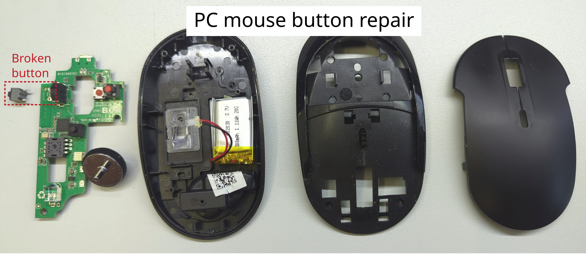

Fritz Powerline does not work

Manufacturer:: AVM / Fritz!
Type: 510E
Description of failure
The device does not turn on. No status LED, no ethernet connection.
Failure investigation
In all cases where “the device does not work” / “the operating LED does not light up,” it makes sense to start troubleshooting at the power supply.
First, measure the voltage at the input capacitor (approx. 325V DC) and the output voltage at the output capacitor.
This is 0V DC.
This means that the power supply unit must be defective.
The power supply unit in question is a flyback power supply unit, recognizable by a single transistor on the input side (integrated into the control IC in this case), the transformer, and a single diode on the output side. These components must be measured and checked individually:
It turns out that the output diode is in a permanent short circuit.
This must be replaced.
Diode Reichelt order number: B2100-13-F DII (Schottky-Barrier rectifier diode, 100 V, 2 A, SMB)
Special feature here:
Parallel to the diode, there is also an SMD ceramic capacitor installed, which is also in short circuit and must be removed.
In some cases manufacturers add the parallel capacitor due to diode characteristics (depends on the type) to avoid to overheat the diode or due to some EMC issues.
As we do not know the original capacitance value (should be not too little but also not too big), the decision is to drop the capacitor and double-check the result by a thermal camera.
After installing the diode, the circuit was checked with a thermal imaging camera to ensure that the new diode does not overheat under full load.